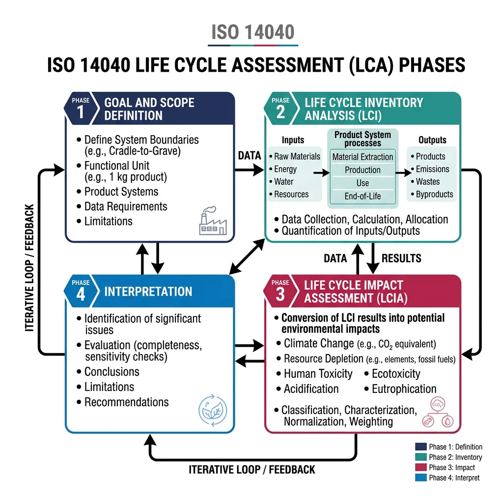
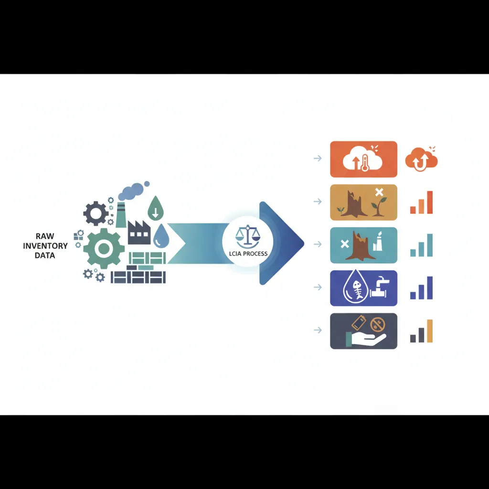
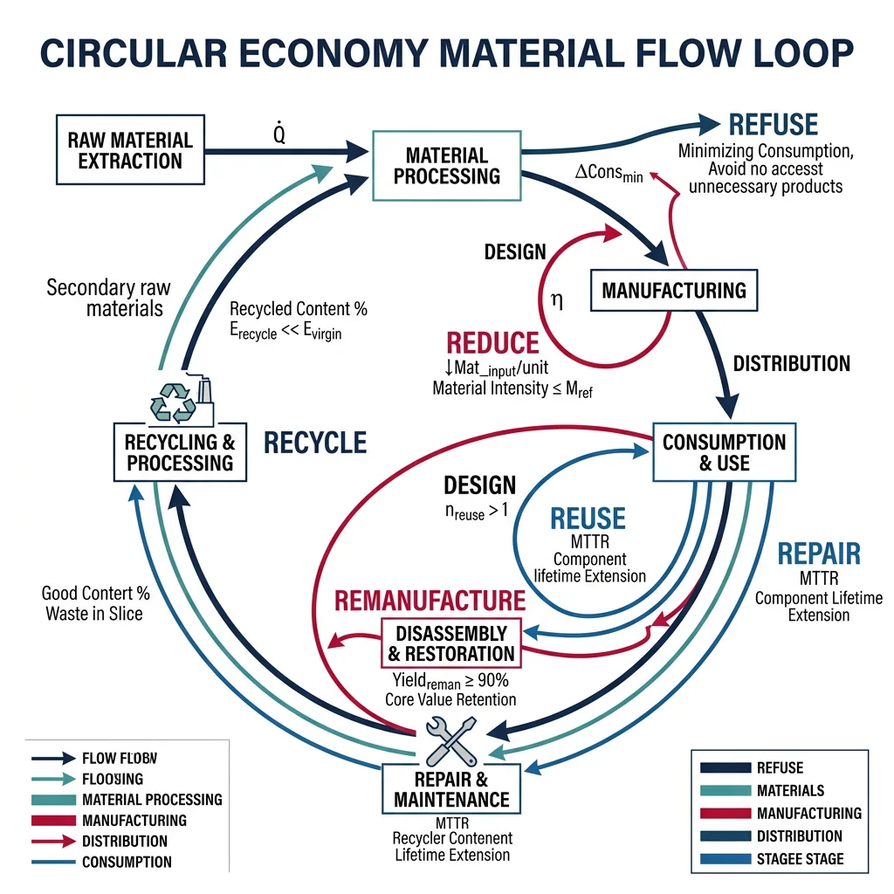
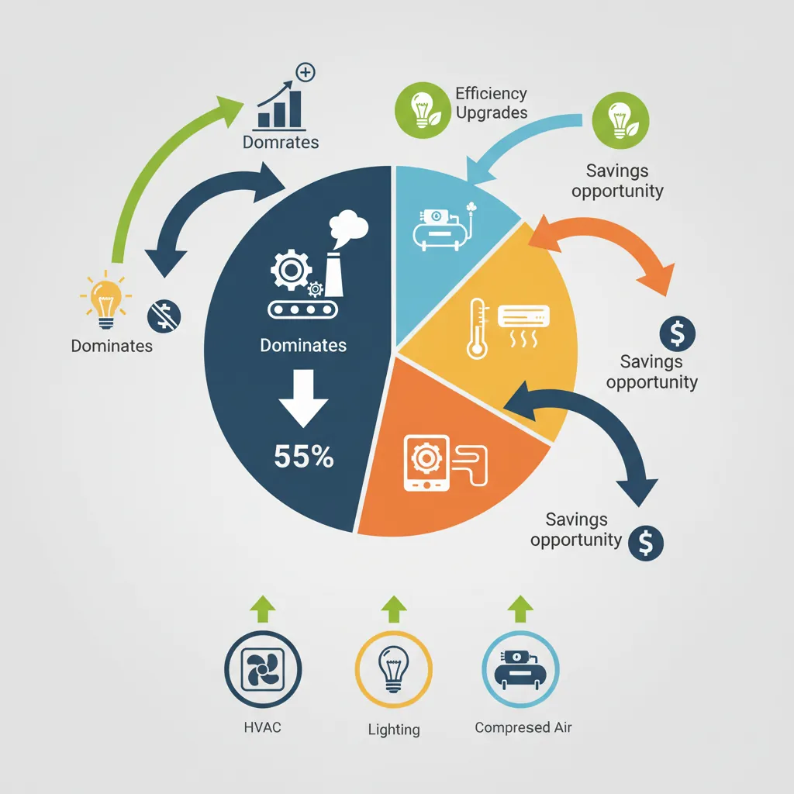
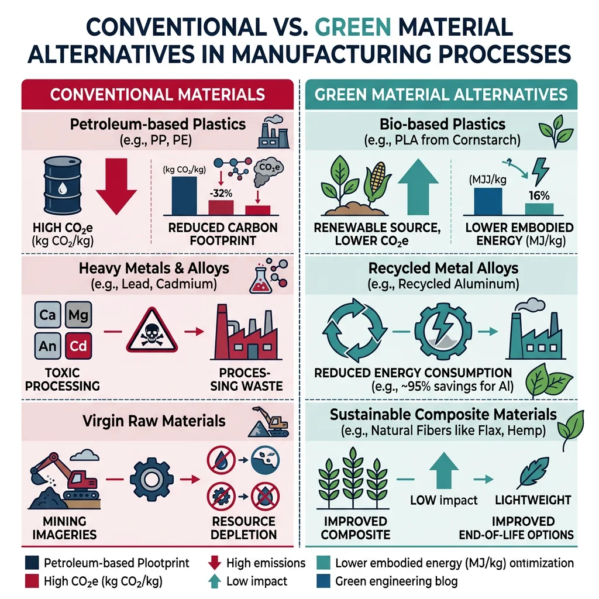

Life Cycle Assessment
Manufacturing Mastery
Manufacturing Systems & Process Foundations
Process taxonomy, physics, DFM/DFA, production economics, Theory of ConstraintsCasting, Forging & Metal Forming
Sand/investment/die casting, open/closed-die forging, rolling, extrusion, deep drawingMachining & CNC Technology
Cutting mechanics, tool materials, GD&T, multi-axis machining, high-speed machining, CAMWelding, Joining & Assembly
Arc/MIG/TIG/laser/friction stir welding, brazing, adhesive bonding, weld metallurgyAdditive Manufacturing & Hybrid Processes
PBF, DED, binder jetting, topology optimization, in-situ monitoringQuality Control, Metrology & Inspection
SPC, control charts, CMM, NDT, surface metrology, reliabilityLean Manufacturing & Operational Excellence
5S, Kaizen, VSM, JIT, Kanban, Six Sigma, OEEManufacturing Automation & Robotics
Industrial robotics, PLC, sensors, cobots, vision systems, safetyIndustry 4.0 & Smart Factories
CPS, IIoT, digital twins, predictive maintenance, MES, cloud manufacturingManufacturing Economics & Strategy
Cost modeling, capital investment, facility layout, global supply chainsSustainability & Green Manufacturing
LCA, circular economy, energy efficiency, carbon footprint reductionAdvanced & Frontier Manufacturing
Nano-manufacturing, semiconductor fabrication, bio-manufacturing, autonomous systemsLife Cycle Assessment (LCA) is the gold-standard methodology for quantifying environmental impacts across a product's entire life — from raw material extraction through manufacturing, use, and end-of-life disposal or recycling. Governed by ISO 14040/14044, LCA provides the scientific basis for sustainable manufacturing decisions.

| LCA Phase | ISO 14040 Step | Key Activities | Output |
|---|---|---|---|
| 1. Goal & Scope | Define purpose, system boundary, functional unit | Determine what's being compared, cradle-to-gate vs cradle-to-grave | Scope document, system boundary diagram |
| 2. Inventory (LCI) | Quantify all inputs and outputs | Data collection: energy, materials, water, emissions, waste | Life Cycle Inventory table |
| 3. Impact Assessment (LCIA) | Translate inventory into environmental impacts | Classification, characterization, normalization, weighting | Impact scores (GWP, AP, EP, ODP, etc.) |
| 4. Interpretation | Analyze results, identify hotspots | Sensitivity analysis, uncertainty analysis, recommendations | Decision support, improvement priorities |
import numpy as np
# Simplified LCA — Manufacturing CO2 Footprint Calculator
# Compares environmental impact of CNC machining vs Additive Manufacturing
# Functional unit: 1 aerospace bracket (titanium Ti-6Al-4V, 0.8 kg finished)
# CNC Machining
cnc_raw_material = 5.2 # kg stock (buy-to-fly ratio 6.5:1)
cnc_energy_kwh = 85.0 # kWh machining energy
cnc_coolant_liters = 0.5 # liters cutting fluid consumed
cnc_chip_recycled = 0.90 # 90% chips recycled
# Additive Manufacturing (SLM/LPBF)
am_powder = 1.1 # kg powder used (including support, 1.375:1 ratio)
am_energy_kwh = 120.0 # kWh laser + inert gas + post-processing
am_argon_liters = 50.0 # liters argon shielding gas
am_powder_recycled = 0.95 # 95% unfused powder recycled
# Emission factors
ti_production_co2 = 36.0 # kg CO2 per kg titanium sponge production
electricity_co2 = 0.40 # kg CO2 per kWh (US grid average)
coolant_co2 = 2.5 # kg CO2 per liter cutting fluid
argon_co2 = 0.5 # kg CO2 per liter argon production
# CNC carbon footprint
cnc_material_co2 = cnc_raw_material * ti_production_co2
cnc_recycling_credit = (cnc_raw_material - 0.8) * cnc_chip_recycled * ti_production_co2 * 0.30 # 30% credit
cnc_energy_co2 = cnc_energy_kwh * electricity_co2
cnc_coolant_co2 = cnc_coolant_liters * coolant_co2
cnc_total = cnc_material_co2 - cnc_recycling_credit + cnc_energy_co2 + cnc_coolant_co2
# AM carbon footprint
am_material_co2 = am_powder * ti_production_co2
am_recycling_credit = (am_powder - 0.8) * am_powder_recycled * ti_production_co2 * 0.30
am_energy_co2 = am_energy_kwh * electricity_co2
am_argon_co2 = am_argon_liters * argon_co2
am_total = am_material_co2 - am_recycling_credit + am_energy_co2 + am_argon_co2
# Comparison
print("LCA Carbon Footprint — Titanium Aerospace Bracket")
print("=" * 60)
print(f"Functional unit: 1 bracket, 0.8 kg Ti-6Al-4V")
print(f"\n{'Category':<25} {'CNC (kg CO₂)':<16} {'AM (kg CO₂)':<16}")
print("-" * 57)
print(f"{'Material production':<25} {cnc_material_co2:<16.1f} {am_material_co2:<16.1f}")
print(f"{'Recycling credit':<25} {-cnc_recycling_credit:<16.1f} {-am_recycling_credit:<16.1f}")
print(f"{'Process energy':<25} {cnc_energy_co2:<16.1f} {am_energy_co2:<16.1f}")
print(f"{'Consumables':<25} {cnc_coolant_co2:<16.1f} {am_argon_co2:<16.1f}")
print(f"{'─'*25} {'─'*15} {'─'*15}")
print(f"{'TOTAL':<25} {cnc_total:<16.1f} {am_total:<16.1f}")
print(f"\n{'Reduction with AM:':<25} {(1-am_total/cnc_total)*100:.1f}%")
print(f"\nHotspot Analysis:")
print(f" CNC: Material dominates ({cnc_material_co2/cnc_total*100:.0f}%) — high buy-to-fly ratio")
print(f" AM: Energy dominates ({am_energy_co2/am_total*100:.0f}%) — long build times")
print(f"\nKey Insight: AM reduces material waste by {(1 - am_powder/cnc_raw_material)*100:.0f}% "
f"but uses {am_energy_kwh/cnc_energy_kwh*100-100:.0f}% more energy")
Environmental Impact Categories
LCIA translates inventory data (kg of CO₂, MJ of energy) into environmental impact categories — standardized metrics that quantify different types of environmental harm:

| Impact Category | Abbreviation | Unit | What It Measures | Manufacturing Relevance |
|---|---|---|---|---|
| Global Warming Potential | GWP | kg CO₂-eq | Greenhouse gas emissions | Energy use, process emissions (smelting, combustion) |
| Acidification Potential | AP | kg SO₂-eq | Acid rain precursors | SO₂/NOₓ from furnaces, power generation |
| Eutrophication Potential | EP | kg PO₄-eq | Nutrient pollution of water bodies | Coolant discharge, phosphate coatings, wastewater |
| Ozone Depletion | ODP | kg CFC-11-eq | Stratospheric ozone destruction | Refrigerants (heat treatment), cleaning solvents |
| Abiotic Resource Depletion | ADP | kg Sb-eq | Non-renewable resource consumption | Metals, minerals, fossil fuels used in production |
| Human Toxicity | HTP | kg 1,4-DCB-eq | Toxic substance exposure risk | Heavy metals (Cr, Ni, Cd), VOCs, particulates |
Life Cycle Inventory & Databases
The Life Cycle Inventory (LCI) phase is the most data-intensive — it requires tracking every material input, energy flow, and emission for all processes within the system boundary. Professional LCA practitioners rely on established databases:
ecoinvent
The world's most comprehensive LCI database — 18,000+ datasets covering energy, materials, transport, waste. Industry standard for academic and commercial LCA. Swiss-based, updated annually.
GaBi / Sphera
Extensive industry-specific data, particularly strong in automotive, chemicals, and metals. 15,000+ datasets. Widely used by OEMs (BMW, Volkswagen, Siemens) for product carbon footprints.
Circular Economy & Recycling
The circular economy fundamentally reimagines manufacturing — moving from the traditional linear model (take → make → dispose) to a circular model where materials cycle continuously. The Ellen MacArthur Foundation estimates circularity could unlock $4.5 trillion in economic value by 2030 while reducing global GHG emissions by 39%.

Case Study: Caterpillar Remanufacturing — Circular Economy Pioneer
Caterpillar's Cat Reman program is one of the world's largest remanufacturing operations — recovering $2+ billion annually in returned components:
- Scale: 20+ remanufacturing facilities worldwide, processing 2.2 million units annually (engines, transmissions, hydraulic cylinders, electronic modules)
- Environmental impact: Remanufacturing uses 85% less energy, 86% less water, and produces 90% less waste compared to new manufacturing
- Core recovery: Components returned at end-of-first-life are disassembled, cleaned, inspected, and rebuilt to original specifications ("same-as-new" warranty)
- Circular pricing: Remanufactured parts sold at 40-60% of new price, making heavy equipment maintenance affordable
- Design for reman: New Caterpillar products are designed with remanufacturing in mind — standardized bolt patterns, modular components, durable materials
Closed-Loop Recycling Systems
Closed-loop recycling recovers manufacturing waste and end-of-life products back into the same material stream, maintaining material quality. This contrasts with downcycling where recycled material goes to lower-value applications:
| Material | Recycling Rate | Quality Retained | Energy Savings vs Virgin | Notable System |
|---|---|---|---|---|
| Aluminum | 75-90% | 100% (infinite recycling) | 95% | Alcoa closed-loop with automotive OEMs |
| Steel | 85-90% | ~95% (trace contamination) | 74% | EAF steelmaking from scrap (Nucor) |
| Copper | 80-85% | 100% (infinite recycling) | 85% | Wire and cable reprocessing |
| Plastics (PET) | 30-40% | Degrades after 3-5 cycles | 76% | Bottle-to-bottle (Coca-Cola) |
| CFRP composites | ~10% | 50-70% (fiber damage) | 60% | Pyrolysis — chopped fiber recovery) |
Remanufacturing & Refurbishment
Remanufacturing restores used products to original performance specifications through a controlled industrial process of disassembly, cleaning, inspection, component replacement, reassembly, and testing. It differs from repair (fixing a specific failure) and refurbishment (cosmetic restoration) by returning the product to same-as-new condition with equivalent warranty.
Energy & Carbon Management
Manufacturing accounts for ~33% of global energy consumption and ~20% of direct CO₂ emissions. Energy management — governed by ISO 50001 — is both an environmental imperative and a business opportunity: energy typically represents 15-40% of operating costs in energy-intensive industries (metals, cement, glass, chemicals).

import numpy as np
# Manufacturing Energy Audit — CNC Machine Shop
# Identifies energy waste and savings opportunities
# Facility parameters
operating_hours = 4_000 # hours/year (2 shifts × 250 days)
electricity_rate = 0.12 # $/kWh
co2_factor = 0.40 # kg CO2/kWh (grid average)
# Equipment energy consumption (measured via power monitoring)
equipment = {
"5-axis CNC center (×4)": {"power_kw": 35, "utilization": 0.72, "qty": 4},
"3-axis CNC lathe (×3)": {"power_kw": 18, "utilization": 0.65, "qty": 3},
"EDM wire (×1)": {"power_kw": 8, "utilization": 0.30, "qty": 1},
"Compressed air system": {"power_kw": 55, "utilization": 0.85, "qty": 1},
"HVAC & lighting": {"power_kw": 45, "utilization": 1.00, "qty": 1},
"Coolant pumps & filtration": {"power_kw": 12, "utilization": 0.75, "qty": 1},
}
# Energy savings opportunities
savings = {
"VFD on compressed air": {"saving_pct": 0.25, "target": "Compressed air system"},
"LED lighting retrofit": {"saving_pct": 0.50, "target": "HVAC & lighting", "portion": 0.30},
"Spindle idle reduction": {"saving_pct": 0.15, "target": "5-axis CNC center (×4)"},
"High-efficiency coolant": {"saving_pct": 0.20, "target": "Coolant pumps & filtration"},
}
print("Manufacturing Energy Audit Report")
print("=" * 70)
total_kwh = 0
total_cost = 0
print(f"\n{'Equipment':<30} {'kW':<8} {'Util':<8} {'kWh/yr':<14} {'Cost/yr':<12} {'CO₂ (t)'}")
print("-" * 70)
equip_kwh = {}
for name, data in equipment.items():
kwh = data["power_kw"] * data["qty"] * data["utilization"] * operating_hours
cost = kwh * electricity_rate
co2 = kwh * co2_factor / 1000
total_kwh += kwh
total_cost += cost
equip_kwh[name] = kwh
print(f"{name:<30} {data['power_kw']*data['qty']:<8} {data['utilization']:<8.0%} {kwh:<14,.0f} ${cost:<11,.0f} {co2:.1f}")
print(f"\n{'TOTAL':<30} {'':8} {'':8} {total_kwh:<14,.0f} ${total_cost:<11,.0f} {total_kwh*co2_factor/1000:.1f}")
print(f"\n\n--- SAVINGS OPPORTUNITIES ---")
total_savings_kwh = 0
total_savings_cost = 0
for measure, data in savings.items():
base = equip_kwh[data["target"]]
portion = data.get("portion", 1.0)
saved = base * data["saving_pct"] * portion
cost_saved = saved * electricity_rate
total_savings_kwh += saved
total_savings_cost += cost_saved
print(f" {measure:<30} saves {saved:>10,.0f} kWh/yr = ${cost_saved:>8,.0f}/yr")
print(f"\n TOTAL SAVINGS: {total_savings_kwh:>10,.0f} kWh/yr = ${total_savings_cost:>8,.0f}/yr")
print(f" Energy reduction: {total_savings_kwh/total_kwh*100:.1f}%")
print(f" CO₂ reduction: {total_savings_kwh*co2_factor/1000:.1f} tonnes/yr")
Waste Heat Recovery
Waste heat recovery (WHR) captures thermal energy that would otherwise be lost to the environment and converts it to useful work — heating, cooling, or electricity. In manufacturing, 20-50% of input energy is typically lost as waste heat from furnaces, compressors, exhaust gases, and cooling systems.
| Heat Source | Temperature | Recovery Technology | Typical Efficiency |
|---|---|---|---|
| Furnace exhaust | 400-1200°C | Recuperator, regenerative burner, waste heat boiler | 40-70% heat recovery |
| Compressor cooling | 70-90°C | Heat exchanger for space heating, preheating wash water | 50-80% heat recovery |
| Steam condensate | 100-150°C | Flash steam recovery, condensate return | 60-90% heat recovery |
| Low-grade heat | <100°C | Heat pump, ORC (Organic Rankine Cycle) | 20-40% conversion to electricity |
Carbon Footprint Reduction
Manufacturing carbon footprint reduction follows a prioritization hierarchy: (1) Avoid — eliminate unnecessary processes, (2) Reduce — improve energy efficiency, (3) Switch — renewable energy and low-carbon materials, (4) Offset — carbon credits (last resort).
Case Study: Volvo Cars — Carbon-Neutral Manufacturing by 2025
Volvo's climate plan targets zero-emission manufacturing — a roadmap applicable to any manufacturer:
- Electricity: 100% renewable electricity across all factories (achieved 2021 via PPAs — Power Purchase Agreements with wind/solar farms)
- Heating: Replaced natural gas furnaces with electric heat pumps and district heating from industrial waste heat at Torslanda plant (Sweden)
- Process redesign: Eliminated energy-intensive paint oven stages using UV-cured primers, saving 30% paint shop energy
- Supplier requirements: Mandates 100% renewable electricity for tier-1 suppliers by 2025 — affecting 800+ companies globally
- Steel transition: Partnering with SSAB on HYBRIT fossil-free steel (hydrogen DRI) — first cars with zero-emission steel in 2026
- Results: 80% reduction in factory CO₂ since 2018 baseline (from 140,000 tonnes to ~28,000 tonnes annually)
Green Materials & Standards
Green manufacturing materials reduce environmental impact through lower toxicity, renewable sourcing, recyclability, or reduced energy intensity. Regulatory drivers — EU REACH (Registration, Evaluation, Authorisation of Chemicals), RoHS (Restriction of Hazardous Substances), and emerging PFAS bans — are accelerating the shift.

| Material Category | Conventional | Green Alternative | Environmental Benefit |
|---|---|---|---|
| Cutting fluids | Mineral oil emulsions | Vegetable ester MQL (minimum quantity lubrication) | 95% less fluid, biodegradable, no disposal cost |
| Surface treatment | Hexavalent chromium plating | Trivalent chromium, PVD coatings | Eliminates carcinogenic Cr(VI), REACH compliant |
| Packaging | Expanded polystyrene (EPS) | Molded pulp, starch foam, mycelium | Compostable, renewable, reduced microplastics |
| Structural materials | Virgin aluminum (smelting) | Recycled aluminum, natural fiber composites | 95% energy savings (recycled Al), bio-based composites |
| Adhesives | Solvent-based adhesives | Water-based, UV-curable, bio-based adhesives | Zero VOC emissions, no solvent recovery needed |
ISO 14001 & EMS
ISO 14001 is the international standard for Environmental Management Systems (EMS) — a systematic framework for identifying, managing, and continuously improving an organization's environmental performance. Over 400,000 organizations worldwide are ISO 14001 certified.
ESG Reporting & Compliance
ESG (Environmental, Social, Governance) reporting has moved from voluntary disclosure to mandatory compliance in many jurisdictions. Manufacturers face reporting requirements under the EU's CSRD (Corporate Sustainability Reporting Directive), the SEC's climate disclosure rules, and customer-driven standards like CDP (Carbon Disclosure Project).
| Framework | Scope | Key Requirements | Applicability |
|---|---|---|---|
| GRI Standards | Comprehensive ESG | Material topics disclosure, stakeholder engagement, impact reporting | Voluntary (most widely used globally) |
| EU CSRD / ESRS | EU sustainability | Double materiality, scope 1/2/3 emissions, taxonomy alignment | Mandatory for EU companies (2024+) |
| CDP | Climate, water, forests | Annual climate questionnaire, emissions targets, risk disclosure | Customer-driven (18,000+ companies report) |
| Science-Based Targets (SBTi) | GHG reduction | 1.5°C-aligned emission reduction targets across scope 1/2/3 | Voluntary but increasingly expected by investors |